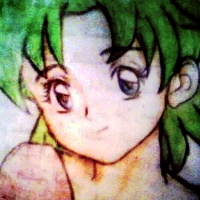

Molly Ringgs
Date of birth: 14 Sep.
Place of birth: Green Ice/Neptune
Blood type: +A
Planet: Neptune
Other: She loves cooking and gazing at stars in summer nights
Meet Molly Ringgs
Molly is 13 years old, she is Neptune and Ice’s daughter. She lives in planet Neptune where her kingdom is situated.
At age 3, Molly had to live without her mother who left to battle Nul with other guardians. Of course she was able to make some friends including Spherta and Hydara her guards, Potos the flute player traveler. At some point she had a puppy and named him Aris.
Physical description
Molly has blue eyes and a green to dark green short hair, her height matches her age, “someone” said she looks like her mother.
The journey
Molly jumped back to the past to help prevent a paradox and resolve a problem her father caused, or that what she had been told. She was a target of a gang that wanted her to reach her long disappeared mother, they believed she was the Key To The Key.
The state
Molly didn’t have the best life for a girl in her age. In spite of her grief she could communicate with her father and share their sadness and work on passing the heavy situation. She didn’t fully used to her life but her friends (including young Neptune) made it easy for her.